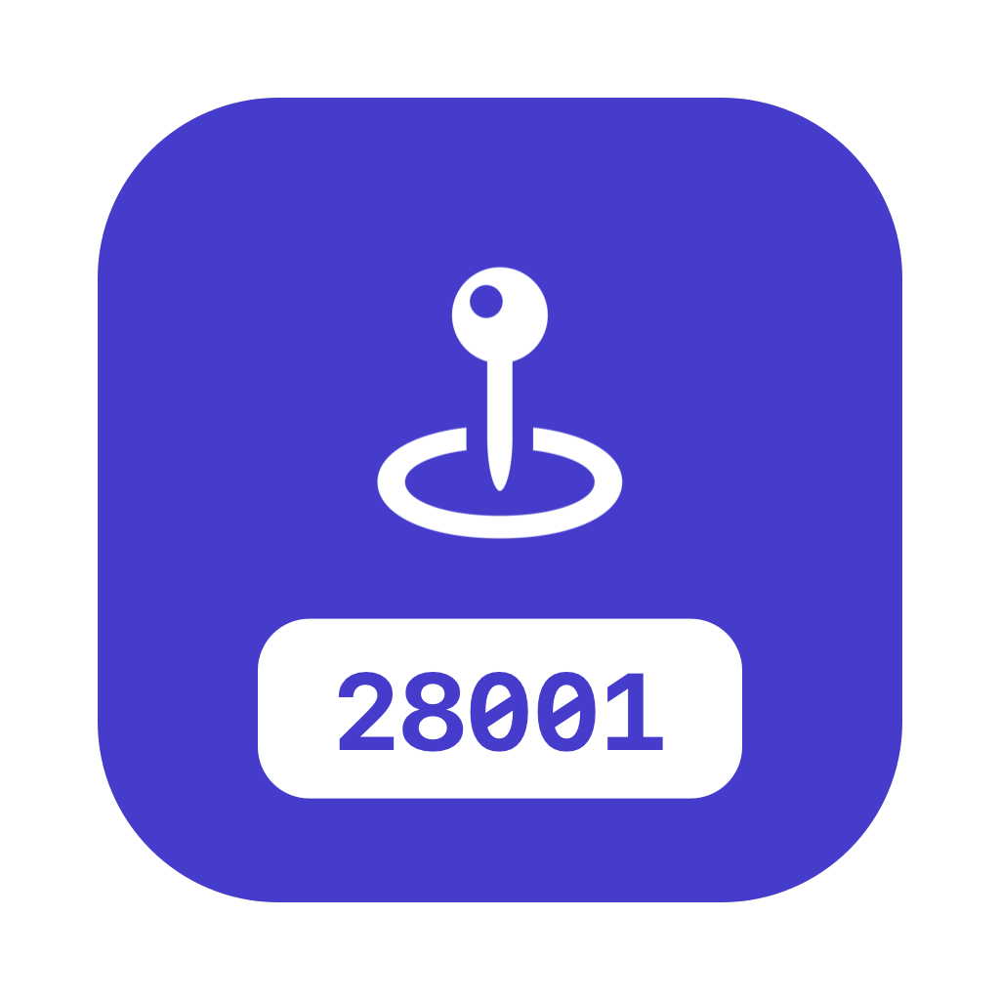

App para iPhone y iPad para buscar códigos postales: por código, ciudad o calle, con mapa, provincia, códigos cercanos, historial, modo offline descargable por país, widgets, Atajos y funciones de IA en el dispositivo.
¿Tienes un problema, una duda o una sugerencia? Escríbeme y te respondo lo antes posible:
Support (English): questions, issues or suggestions? Email me at the address above and I'll get back to you as soon as possible.